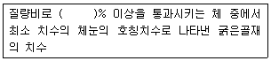
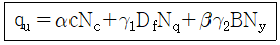

건설재료시험기능사 (2008-02-03 기출문제)
1과목: 건설재료
1. 다음 중 다이너마이트의 주성분은?
- 질산암모니아
- 니트로글리세린
- AN-FO
- 초산
(정답률: 92%)

2. 다음 중 열가소성 수지는?
- 페놀수지
- 요소수지
- 염화비닐수지
- 멜라민수지
(정답률: 65%)
3. 알루미나 시멘트에 대한 설명 중 옳지 않은 것은?
- 보크사이트와 석회석을 혼합하여 분말로 만든 시멘트이다.
- 재령 7일에 보통포틀랜드 시멘트의 재령 28일에 해당하는 강도를 나타낸다.
- 화학작용에 대한 저항성이 크다.
- 내화용 콘크리트에 적합하다.
(정답률: 54%)
4. 골재의 함수 상태에 있어서 공기 중 건조상태에서 표면건조 포화상태가 될 때까지 흡수되는 물의 양을 무엇이라고 하는가?
- 함수량
- 흡수량
- 표면수량
- 유효 흡수량
(정답률: 60%)
5. 풍화된 시멘트에 대한 설명 중 옳지 않은 것은?
- 비중이 작아진다.
- 응결이 늦어진다.
- 조기강도가 커진다.
- 강열감량이 커진다.
(정답률: 59%)
6. 중용열 포틀랜드 시멘트의 특징을 설명한 것 중 옳지 않은 것은?
- 수화작용을 할 때 발열량이 적다.
- 한중 콘크리트 시공에 알맞다.
- 건조수축이 적다.
- 댐 콘크리트 등에 쓰인다.
(정답률: 53%)
7. 다음 중 목재의 기건비중에 대한 설명으로 옳은 것은?
- 수분을 완전히 건조시킨 상태에서의 비중
- 생목 또는 벌목 직후의 비중
- 공기 중의 습도와 평형이 될 때까지 건조한 상태에서의 비중
- 수중에서 포화된 상태에서의 비중
(정답률: 68%)
8. 콘크리트 배합설계에서 단위시멘트량이 300kg/m3, 단위수량이 150kg/m3일 때 물-시멘트비는 얼마인가?
- 45%
- 50%
- 52%
- 55%
(정답률: 86%)
9. 천연 아스팔트의 종류가 아닌 것은?
- 레이크 아스팔트(lake asphalt)
- 록 아스팔트(rock asphalt)
- 샌드 아스팔트(sand asphalt)
- 블론 아스팔트(blow asphalt)
(정답률: 76%)
10. 다음 중 강도가 가장 큰 석재는?
- 사암
- 대리석
- 안산암
- 화강암
(정답률: 79%)
11. 서중콘크리트 시공이나 레디믹스트 콘크리트에서 운반거리가 멀 경우 혼화제를 사용하고자 한다. 다음 중 어느 혼화제가 적당한가?
- 지연제
- 촉진제
- 급결제
- 방수제
(정답률: 84%)
12. 다음 중 경화 촉진제는?
- 염화칼슘
- AE제
- 알루미늄
- 플라이 애시
(정답률: 51%)
13. 강을 용도에 알맞은 성질로 개선시키기 위해 가열하여 냉각시키는 조작을 강의 열처리라 한다. 다음 중 이 조작과 관계없는 것은?
- 성형
- 담금질
- 뜨임
- 불림
(정답률: 62%)
14. 콘크리트의 배합설계 계산상 그 양을 고려하여야 하는 혼화재료는 어느 것인가?
- 플라이 애시
- 고성능 감수제
- 기포제
- AE제
(정답률: 64%)
15. 고무화 아스팔트(Rubberized Asphalt)는 어떤 물질에 천연고무, 합성고무를 혼합한 것인가?
- 스트레이트 아스팔트
- 블론 아스파트
- 시멘트
- 합성수지
(정답률: 65%)
16. 콘크리트용 굵은 골재의 최대치수에 관한 다음 표의 설명에서 ()안에 들어갈 적당한 수치는?

- 60
- 70
- 80
- 90
(정답률: 67%)
17. 국수모양의 흙이 지름 몇 mm에서 부서질 때를 소성한계라 하는가?
- 1mm
- 3mm
- 5mm
- 7mm
(정답률: 80%)
18. 다음 중 시멘트의 비중을 시험할 때 사용되는 기구는?
- 르샤틀리에병
- 블레인투과장치
- 비이카침
- 길모어침
(정답률: 80%)
19. 콘크리트 블리딩 시험(KS F 2414)은 굵은 골재의 최대치수가 얼마 이하인 경우 적용하는가?
- 200mm
- 150mm
- 100mm
- 50mm
(정답률: 61%)
20. 시멘트 분말도에 대한 설명으로 옳은 것은?
- 시멘트 입자의 가는 정도를 나타내는 것을 분말도라 한다.
- 시멘트 입자가 가늘수록 분말도가 낮다.
- 분말도가 높으면 시멘트의 표면적이 커서 수화작용이 늦다.
- 분말도가 높으면 시멘트의 표면적이 커서 조기강도가 작아진다.
(정답률: 67%)
2과목: 건설재료시험
21. 슬럼프 시험에 관한 내용 중 옳은 것은?
- 스럼프콘에 시료를 채우고 벗길 때까지의 시간은 5분이다.
- 슬럼프콘만을 벗기는 시간은 10초이다.
- 슬럼프콘의 높이는 30cm이다.
- 물를 많이 넣을수록 슬럼프값은 작아진다.
(정답률: 79%)
22. 일반적인 흙의 밀도시험에서 증류수와 시료를 채운 피크노미터를 전열기로 얼마 이상 끓이는가?
- 1분
- 3분
- 5분
- 10분
(정답률: 78%)
23. 시멘트 모르타르 압축강도시험에서 시멘트를 510g 사용했을 때 표준모래의 양은 얼마나 되는가?
- 약 510g
- 약 638g
- 약 1020g
- 약 1250g
(정답률: 51%)
24. 현장에서 모래 치환법에 의한 흙의 단위무게 시험을 할 때의 유의사항 중 옳지 않은 것은?
- 측정병의 부피를 구하기 위하여 측정병에 물을 채울 때에 기포가 남지 않도록 한다.
- 측정병에 눈금을 표시하여 병과 연결부와의 접촉위치를 검정할 때와 같게 한다.
- 측정병에 모래를 부어 넣는 동안 깔대기 속의 모래가 항상 반 이상이 되도록 일정한 높이를 유지시켜 준다.
- 측정병에 모래를 넣을 때에 병을 흔들어서 가득 담을 수 있도록 한다.
(정답률: 69%)
25. 콘크리트 강도시험용 공시체를 제작할 경우 공시체의 양생중의 온도는 어느 정도로 유지해야 하는가?
- 5±2℃
- 10±2℃
- 20±2℃
- 27±2℃
(정답률: 74%)
26. 골재의 체가름 시험에 필요한 시험기구로서 해당 되지 않는 것은?
- 표준체
- 철망태
- 시료분취기
- 체진동기
(정답률: 42%)
27. 굳지 않은 콘크리트의 반죽 질기를 시험하는 방법이 아닌 것은?
- 슬럼프 시험
- 리몰딩 시험
- 길모아침 시험
- 켈리볼 관입시험
(정답률: 52%)
28. 어느 흙을 수축한계 시험하여 수축비가 1.6이고 수축한계가 25.0%일 때 이 흙의 비중은?
- 1.89
- 2.47
- 2.67
- 2.79
(정답률: 45%)
29. 흙의 함수비 시험에 사용되지 않는 기계 및 기구는?
- 저울
- 항온건조기
- 데시케이터
- 피크노미터
(정답률: 48%)
30. 잔골재의 체가름 시험에서 입도범위(조립률:FM)가 어느 범위 안에 들어야 콘크리트용 잔골재로서 알맞은가?
- 1.3~2.3
- 2.3~3.1
- 5~6
- 6~8
(정답률: 78%)
31. 아스팔트의 늘어나는 능력을 측정하는 시험은?
- 아스팔트 비중시험
- 아스팔트 침입도시험
- 아스팔트 인화점시험
- 아스팔트 신도시험
(정답률: 82%)
32. 콘크리트의 압축 강도 시험에서 시험체의 가압면에는 일정한 크기 이상의 홈이 있어서는 안 된다. 이를 방지하기 위하여 하는 작업을 무엇이라 하는가?
- 몰딩
- 캐핑
- 리몰딩
- 코팅
(정답률: 77%)
33. 흙의 액성한계 시험결과를 반대수용지에 작성하는 곡선은?
- 다짐곡선
- 입도곡선
- 유동곡선
- 압밀곡선
(정답률: 64%)
34. 폭 15cm, 두께 15cm, 지간길이 50cm의 콘크리트 공시체를 표준조건에서 제작 양생한 다음 휨 강도시험을 실시한 결과 공시체의 중앙부가 파괴되었을 때 시험기의 최대 하중은 4⑤0kg 이었다. 이 공시체의 휨 강도는?
- 60kg/cm2
- 55g/cm2
- 50g/cm2
- 45g/cm2
(정답률: 40%)
35. 골재에 포함된 잔입자 시험(KS F 2511)은 골재를 물로 씻어서 몇 mm체를 통과하는 것을 잔입자로 하는가?
- 0.03mm
- 0.04mm
- 0.06mm
- 0.08mm
(정답률: 57%)
36. 아스팔트 침입도는 표준침의 관입 저항으로 측정하는 것인데, 시료 중에 관입하는 깊이를 얼마 단위로 나타낸 것을 침입도 1로 하는가?
- 1/10mm
- 3/10 mm
- 1/100mm
- 1mm
(정답률: 79%)
37. 블리딩 시험을 한 결과 마지막까지 누계한 블리딩에 따른 물의 부피 V=76cm3, 콘크리트 윗면의 면적 A=490cm2일 때 블리딩량은?
- 1.13cm3/cm2
- 0.12cm3/cm2
- 0.16cm3/cm2
- 0.19cm3/cm2
(정답률: 66%)
38. 유동곡선에서 타격회수 몇 회에 해당하는 함수비를 액성한계로 하는가?
- 10회
- 15회
- 20회
- 25회
(정답률: 82%)
39. 콘크리트의 쪼갬 인장강도 시험시 지름이 10cm, 길이가 20cm인 공시체에 하중을 가하여 공시체가 15ton에서 파괴되었다면 이 때의 인장강도는 얼마인가?
- 47.75kg/cm2
- 61.42kg/cm2
- 75.00kg/cm2
- 150.0kg/cm2
(정답률: 41%)
40. 골재의 절대부피가 0.674m3이고 잔골재율이 41%이고 잔골재의 비중이 2.60일 때 잔골재량(kg/m3)은 약 얼마인가?
- 528
- 562
- 624
- 718
(정답률: 41%)
3과목: 토질
41. 아스팔트(Asphalt)침입도 시험을 시행하는 목적은?
- 아스팔트 비중측정
- 아스팔트 신도측정
- 아스팔트 굳기 정도측정
- 아스팔트 입도측정
(정답률: 67%)
42. 골재에 포함된 잔입자에 대한 설명으로 틀린 것은?
- 골재에 들어 있는 잔입자는 점토, 실트, 운모질 등이다.
- 골재에 잔입자가 많이 들어 있으면 콘크리트의 혼합수량이 많아지고 건조수축에 의하여 콘크리트에 균열이 생기기 쉽다.
- 골재에 잔입자가 들어 있으면 블리딩 현상으로 인하여 레이턴스가 많이 생기게 된다.
- 골재 안의 표면에 점토, 실트 등이 붙어 있으면 시멘트풀과 골재와의 부착력이 커서 강도와 내구성이 커진다.
(정답률: 55%)
43. 흙의 함수비 시험에서 시료를 몇 ℃에서 일정무게가 될 때까지 건조시키는가?
- 20±3℃
- 270±10℃
- 23±2℃
- 110±5℃
(정답률: 73%)
44. 액성한계와 소성한계시험을 할 때 시료준비 방법으로 옳은 것은?
- 0.425mm체에 잔류한 흙을 사용한다.
- 0.425mm체에 통과한 흙을 사용한다.
- 4mm체에 잔류한 흙을 사용한다.
- 4mm체에 통과한 흙을 사용한다.
(정답률: 74%)
45. 흙의 다짐 시험에서 A 다짐의 허용 최대 입경은?
- 37.5mm
- 25.5mm
- 22mm
- 19mm
(정답률: 35%)
46. 어떤 점성토에 있어서 액성한계 60%, 소성한계 40%, 수축한계 20%일 때 소성지수는?
- 10%
- 20%
- 30%
- 40%
(정답률: 65%)
47. 사면 파괴의 원인이 아닌 것은?
- 흙의 수축과 팽창에 의한 균열
- 흙이 가지는 전단 저항력의 증가
- 함수량의 증가에 따른 점토의 연약화, 간극 수압의 증가
- 공사시 흙의 굴착, 이동, 지진 및 수압의 작용
(정답률: 57%)
48. 동상(凍上)에 대한 설명 중 옳지 않은 것은?
- 동상을 가장 받기 쉬운 흙은 실트이다.
- 아이스렌스를 형성할 수 있도록 물의 공급이 충분할 때 동상이 일어난다.
- 지하수위가 지표면 가까이 있을 때 동해(凍害)가 심하다.
- 모관수의 상승 방지를 위해 지하수위 아래에 차단층을 설치하면 동상을 방지할 수 있다.
(정답률: 41%)
49. 모래치환법에 의한 현장 흙의 단위무게시험에 있어서 모래는 어느 것을 구하기 위하여 쓰이는가?
- 시험구멍에서 파낸 흙의 중량
- 시험구멍의 부피
- 시험구멍에서 파낸 흙의 함수상태
- 시험구멍 밑면부의 지지력
(정답률: 61%)
50. 흙의 예민비를 구할 수 있는 시험은?
- 일축압축시험
- 직접전단시험
- 삼축압축시험
- 베인전단시험
(정답률: 56%)
51. 유선망도에서 상하류면의 수두차가 4m, 등수두면의 수가 12개, 유로의 수가 6개일 때 단위 길이당 침투 수량은 얼마인가? (단, 투수층의 투수계수는 2.0×10-4m/sec 이다.)
- 8.0×10-4m3/sec
- 5.0×10-4m3/sec
- 4.0×10-4m3/sec
- 7.0×10-6m3/sec
(정답률: 53%)
52. 어떤 지반내의 한점에서 연직응력이 8.0t/m2이고, 토압계수가 0.4일 때 수평응력(σh)은?
- 2.2t/m2
- 1.6t/m2
- 3.2t/m2
- 4.0t/m2
(정답률: 53%)
53. 다음 중 유효응력을 설명한 것으로 가장 적합한 것은?
- 토립자(土粒子)간에 작용하는 압력과 간극수압을 합한 압력
- 간극수(間隙水)가 받는 압력
- 전체 응력에서 간극수압을 뺀 값
- 하중을 받고 있는 흙의 압력
(정답률: 49%)
54. 최적함수비(OMC)에 대한 설명으로 올바른 것은?
- 최대 건조 단위무게가 얻어지는 함수비
- 흙속의 공기 무게에 대한 흙 전체 무게의 비
- 공기 함유율이 0인 상태
- 흙임자의 부피에 대한 간극의 부피 비
(정답률: 60%)
55. 토질시험에 의해서 액성한계를 결정하기 위해서는 액성한계시험 기구의 접시를 몇 cm높이에서 낙하시키는가?
- 1cm
- 2cm
- 3cm
- 4cm
(정답률: 37%)
56. 입도분포를 통해 흙의 공학적 성질을 파악하기 위해 입도시험을 한 결과 가적통과율 10%인 D10이 0.095mm이고 가적통과율 60%인 D60이 0.16mm이며 통과율 30%인 D30이 0.13mm이면 이 시료의 균등계수는 얼마인가?
- 1.62
- 1.68
- 1.72
- 1.75
(정답률: 63%)
57. 깊은 기초의 종류가 아닌 것은?
- 말뚝기초
- 피어기초
- 전면기초
- 우물통기초
(정답률: 67%)
58. 테르쟈기에 의해 제안된 아래 표와 같은 극한지지력공식에서 각 기호에 대한 설명으로 잘못된 것은?

- B : 기초 폭
- c : 내부 마찰각
- Df : 기초의 근입깊이
- α, β : 기초의 형상계수
(정답률: 37%)
59. 도로나 활주로 등의 포장 두께를 결정하기 위하여 주로 실시하는 토질 시험은?
- CBR시험
- 일축압축시험
- 표준관입시험
- 현장 단위무게시험
(정답률: 77%)
60. 젖은 흙의 중량이 70g이고 흙은 노건조 후 칭량하니 60g이었다. 흙의 함수비는?
- 14.4%
- 16.7%
- 18.2%
- 19.4%
(정답률: 51%)